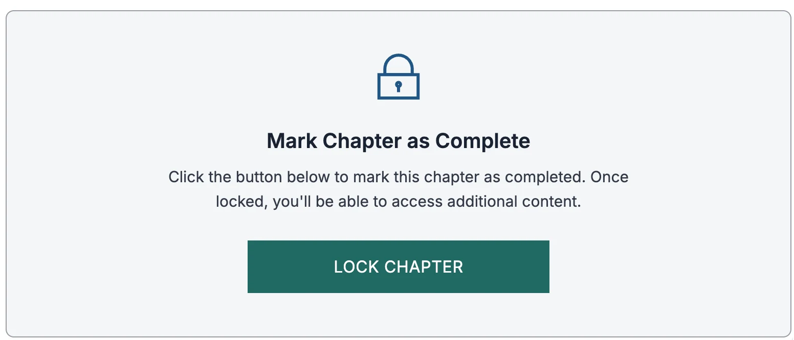
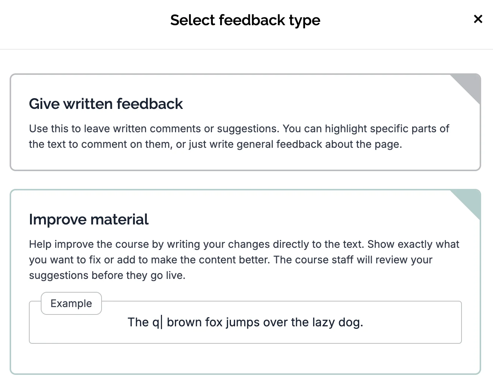

البدء
يدور هذا الجزء بأكمله حول TypeScript: مجموعة فائقة مفتوحة المصدر ومكتوبة الأنواع (typed superset) من JavaScript، طوّرتها Microsoft وتُترجم إلى JavaScript عادية.
في هذا الجزء، سنستخدم الأدوات التي عرّفنا بها سابقاً لإضافة ميزات متكاملة من الطرف إلى الطرف (end-to-end) إلى منظومة قائمة، مع أدوات فحص الشيفرة (linters) محدّدة مسبقاً وقاعدة شيفرة قائمة، أثناء كتابتنا بـTypeScript. بعد إتمام هذا الجزء، ينبغي أن تكون قادراً على فهم المشاريع التي تستخدم TypeScript وتطويرها وتهيئتها.
المتطلبات المسبقة
يعتمد هذا الجزء على مفاهيم كثيرة غُطّيت في الأجزاء السابقة من المقرر. يُنصح بإكمال الأجزاء من 0 إلى 5 على الأقل قبل بدء هذا الجزء.
التسجيل
لا تحتاج إلى التسجيل للدراسة في المقرر. لا يمكنك التسجيل إلا بعد إكمال المقرر، انظر الحصول على نقاط ECTS والشهادة أدناه.
المساعدة في التمارين أو الأمور العملية للمقرر
للمقرر مجموعة Discord نناقش فيها كل ما يتعلق بالمقرر. الدعم متاح على مدار الساعة تقريباً، والنقاش باللغتين الإنجليزية والفنلندية.
انضم إلى قناة Full stack open على Discord: https://study.cs.helsinki.fi/discord/join/fullstack
كل التعليقات غير اللائقة أو المهينة أو التمييزية على القناة محظورة وستؤدي إلى اتخاذ إجراء ضد صاحب التعليق.
تسليم التمارين
يحتوي هذا الجزء من المقرر على 35 تمريناً، ويجب إكمال جميعها للحصول على التقييم.
تُسلَّم التمارين إلى مستودع GitHub واحد، يشمل كل الشيفرة المصدرية والإعدادات التي تجريها خلال هذا الجزء. إذا كنت تستخدم مستودعاً خاصاً، أضف مستخدم GitHub mluukkai كمساهم.
انسخ كل محتوى https://github.com/fullstack-hy2020/fs-typescript إلى مستودع التسليم الخاص بك.
لا ينبغي أن تغيّر بنية المجلدات أو تحذف أي شيء منها. يجب أن يوجد كل تمرين في المجلد الصحيح بالضبط!
تُراجع تمارينك بعد تسليم التمرين الأخير، وإذا كان كل شيء مقبولاً إلى حد ما، ستُقيَّم وستتاح لك الشهادة والنقاط الجامعية.
تذكّر ألا تغش في التمارين! إذا سلّم عدة طلاب، مثلاً، الشيفرة نفسها، تُعالج المسألة وفقاً لـسياسة الانتحال في جامعة هلسنكي.
قفل الفصل
بعد إكمال جميع تمارين الفصل، يجب عليك قفل الفصل قبل الانتقال إلى الفصل التالي. تذكّر أنه بعد قفل الفصل لن تتمكن من تسليم أي تمارين أخرى له، لذا لا تقفله إلا عندما ينتهي كل شيء.

الحصول على نقاط ECTS والشهادة
بعد إكمال التمارين وتقييمها، يمكنك الحصول على نقاط ECTS كما يلي
طلاب الدرجات في جامعة هلسنكي وطلاب التبادل
- سجّل مباشرة عبر حسابك في Sisu (Sisu: هيكل الدراسات).
- أكمل جميع التمارين المطلوبة.
آخرون
- أكمل جميع التمارين المطلوبة.
- انتقل إلى الصفحة الرئيسية للمقرر.
- مرّر للأسفل حتى ترى عنصراً يقول تهانينا!
- اضغط زر تسجيل .
- املأ نموذج التسجيل في الجامعة المفتوحة (جامعة هلسنكي). استخدم عنوان البريد الإلكتروني نفسه الذي استخدمته لإكمال المقرر.
- عادةً ما تُسجَّل النقاط في سجل الدراسة بجامعة هلسنكي خلال يومين من التسجيل.
عادةً ما يستغرق تسجيل النقاط يومين.
شهادة المقرر متاحة أيضاً في الصفحة الرئيسية للمقرر.
التحسينات والملاحظات على مادة المقرر
نرحب بمساهمات الطلاب وأعضاء مجتمع DevOps الآخرين في مادة المقرر! إذا لاحظت أي أخطاء أو أخطاء مطبعية أو أخطاء في المادة، فنرجو أن تفكر في إرسال طلب تصحيح أو توضيح بالضغط على زر إرسال الملاحظات ، الذي يمنحك خيارين

في حالة الأخطاء المطبعية مثلاً، يُفضَّل اختيار تحسين المادة الذي يجعل المادة "قابلة للتحرير"، ويمكنك إرسال اقتراحات التحسين للموافقة عليها.
استخدام LLM:s
أصبحت نماذج اللغة الكبيرة أدوات قوية في تطوير البرمجيات، ووكيلات البرمجة (coding agents) تدفع هذه القدرات إلى أبعد من ذلك. يمكنها أن تجعل مقرراً كهذا يبدو بلا جهد تقريباً، لكن الاعتماد عليها بإفراط له ثمن. لاستخدام الذكاء الاصطناعي بفعالية، ما زلت بحاجة إلى إتقان متين للأساسيات. لهذا أقترح استخدام الوكلاء باعتدال، لا سيما في الشروح وتصحيح الأخطاء، حتى تبني فهماً حقيقياً بدلاً من الاستعانة بمصادر خارجية للتعلّم.
نهج عملي يضع التعلّم أولاً لاستخدام الذكاء الاصطناعي في هذا المقرر:
قبل استخدام الذكاء الاصطناعي
- جرّب بنفسك أولاً: اكتب حلاً أو على الأقل ارسم مقاربتك.
- حدّد المشكلة بدقة: تعرّف على رسالة الخطأ بالتحديد أو المفهوم غير الواضح أو المقايضة التصميمية التي علقت عندها.
كيف تستخدم الذكاء الاصطناعي بحكمة
- الشروح: اطلب شروحاً واضحة للمفاهيم أو الشيفرة (لماذا يعمل شيء ما، وليس كيف فقط).
- تصحيح الأخطاء: شارك الخطأ والشيفرة ذات الصلة وما جربته بالفعل؛ واطلب فرضيات وحلولاً ممكنة.
- مراجعة الأقران: اطلب ملاحظات على حلك والحالات الحدية والتعقيد والبدائل.
- دعم التصميم: اطلب تقسيم المشكلة إلى أجزاء، واقتراح حالات اختبار، وتحديد معايير النجاح.
ما يجب تجنبه
- نسخ حلول كاملة دون فهمها.
- الطلبات الواسعة جداً ("اكتب الواجب كاملاً") التي تختصر تعلّمك.
- الاعتماد على إجابة واحدة دون تحقق أو اختبارات.
الخلاصة: اجعل الذكاء الاصطناعي شارحك ومراجعك وشريكك في تصحيح الأخطاء، لا بديلاً عن التفكير والتدرّب.
عن المادة
أُنشئ هذا الجزء بواسطة Tuomo Torppa وTuukka Peuraniemi وJani Rapo، المطوّرين الرائعين في Terveystalo، أكبر مزوّد خدمات رعاية صحية خاصة في فنلندا. تغطي شبكة Terveystalo الوطنية 300 موقع في أنحاء فنلندا. وتُكمَّل شبكة العيادات بخدمات رقمية تعمل على مدار الساعة.
هذه المادة مرخّصة بموجب Creative Commons BY-NC-SA 4.0 ، لذا يمكنك استخدام المادة وتوزيعها بحرية ما دمت تذكر المنشئين الأصليين. إذا أجريت تغييرات على المادة وأردت توزيع النسخة المعدّلة، فيجب ترخيصها بالترخيص نفسه. يُحظر استخدام المادة لأغراض تجارية دون إذن.
0. تمرين تمهيدي